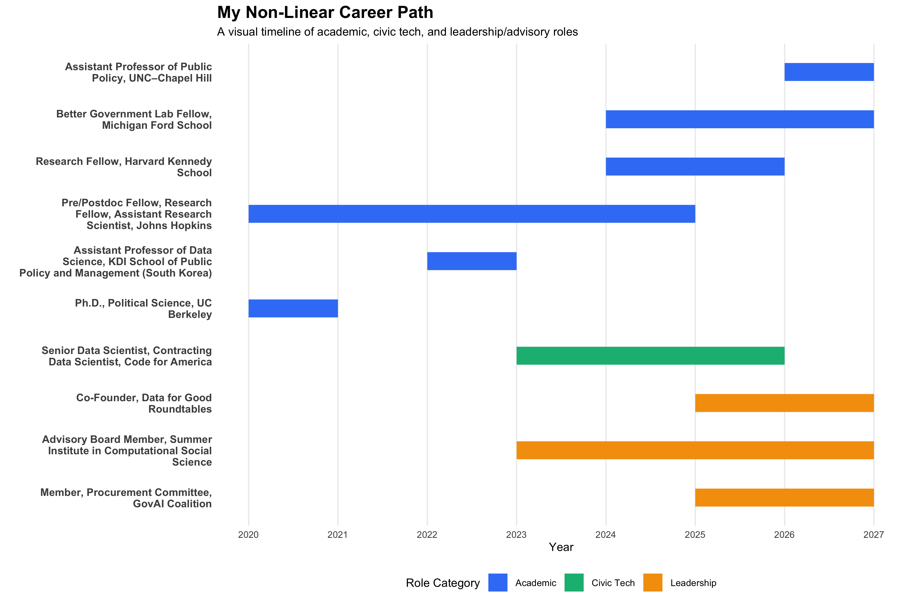

| Date | Type | Event | Place |
|---|---|---|---|
| June 16–18 | Participant | 2026 Veritas Scholars Summit (scheduled) | Park City, Utah, USA |
| March 4 | Participant | Federation of American Scientists AI Policy Sprint Co-Creation Forum (scheduled) | Washington, DC, USA |
| February 14 | Talk | Duke Conference on Society-Centered AI (scheduled) | Durham, NC, USA |

A political scientist by training, a data scientist in practice, and a civic tech nerd at heart.
Jae Yeon Kim
“The scientist is a communicator as well as a discoverer—sometimes even a missionary.”
—Herbert A. Simon (1916-2001)
Hello! I am Jae.
I am an Assistant Professor of Public Policy at the University of North Carolina at Chapel Hill, and a non-resident Research Fellow at the Harvard Kennedy School and a Better Government Lab Fellow at the University of Michigan’s Ford School of Public Policy. I co-founded the Data for Good Roundtables and serve on the Advisory Council of the Summer Institute in Computational Social Science, the Procurement Committee at the GovAI Coalition, and the APSA Task Force on Artificial Intelligence.
Previously, I worked as a Senior Data Scientist at Code for America, where I collaborated with the U.S. government to improve access to safety net programs. I also served as an Assistant Research Scientist at the SNF Agora Institute at Johns Hopkins University, where I co-developed the Mapping the Modern Agora Project. I earned my Ph.D. in Political Science from the University of California, Berkeley.
My research investigates how governments and communities build the capacity to implement public policy effectively. I focus on urban, social, and technology policy in the United States, examining how public institutions reduce administrative burdens in safety net programs, how civic infrastructure strengthens democratic governance, and how state and local governments use artificial intelligence to enhance public service delivery.
I’m currently working on a book project titled Unseen and Uncounted, which examines how interactions between street-level bureaucrats and non-Black minority community organizers during the War on Poverty gave rise to new racial group formations—what we know today as Asian Americans and Latinos..
I use a wide range of methods, including big data and AI, field experiments, archival research, and human-centered design. I often collaborate with government and nonprofit partners to produce research that directly informs policy and improves practice.
My research has been published in Nature Human Behaviour, Journal of Policy Analysis and Management, Nature: Scientific Data [2x], Perspectives on Politics [2x], Political Research Quarterly [2x], Journal of Experimental Political Science, and Studies in American Political Development, among others.
I am the recipient of the Paul Volcker Junior Scholar Research Grant Award in Public Administration (2025), Emerging Scholar Award in Civic Engagement (2024), and the Best Dissertation Award in Urban and Local Politics (2022) from the American Political Science Association, as well as the Best Paper Award in Asian Pacific American Politics (2020) from the Western Political Science Association.
🎓 For Prospective Students
PhD Students: I’m accepting students this cycle (to start in Fall 2026).
UNC Undergrads & Graduate Students: If you’re interested in working with me, please stay tuned. I will post a rolling application form here if and when I have RA openings.
📅 2026 News
📅 2025 News (click to expand)
| Date | Type | Event | Place |
|---|---|---|---|
| November 19 | Talk | Institute of Governmental Studies, Korea University, hosted by Jun Koo | Virtual |
| November 18 | Panel | Virtual Job Market Event, hosted by Dept. of Political Science & IR, University of Southern California | Virtual |
| November 12-16 | Panel | Association for Public Policy Analysis and Management (APPAM) | Seattle, WA, USA |
| November 5-7 | Participant | The Gov AI Coalition Summit, hosted by GovAI Coalition and the City of San José | San José Convention Center, CA, USA |
| October 30 | Talk | New York City Mayor’s Office of Economic Opportunity (NYC Opportunity), hosted by Sophia Tareen | Virtual |
| October 30 | Panel | Virtual Job Market Event, hosted by Dept. of Political Science, UC Berkeley, feat. Natalia Garbiras-Díaz | Virtual |
| October 22 | Talk | PRIISM Seminar Series, NYU, hosted by Klint Kanopka and Ravi Shroff | Virtual |
| October 16-17 | Participant | Better Government Lab Research Treat, Georgetown McCourt School of Public Policy | Washington, DC, USA |
| October 15 | Talk | Tech and Innovation Speaker Series, Johns Hopkins SAIS | Washington, DC, USA |
| Sep 30 | Talk | Inequality Working Group Seminar, EAAMO (Equity and Access in Algorithms, Mechanisms, and Optimization) | Virtual |
| Sep 11–14 | Panel | American Political Science Association (APSA) | Vancouver, Canada |
| Sep 10 | Discussant | Narrative and Text Analysis in the Study of Migration and Citizenship hosted by the UBC’s Centre for Migration Studies | Vancouver, Canada |
| August 14-16 | Participant | New Faculty Orientation, hosted by UNC-CH | Chapel Hill, NC, USA |
| July 29 | Panel | Annual Research Conference on the American Political Economy | Virtual |
| July 17 | Publication | Group Process & Intergroup Relations | Online First |
| July 8 | Publication | Nature: Scientific Data | Online First |
| June 27–28 | Talk | Korea Foundation for Advanced Studies | Seoul, South Korea |
| June 26 | Panel | Dept. of Political Science & IR, Seoul National University, hosted by Seo-young Silvia Kim | Seoul, South Korea |
| June 26 | Panel | Public Management Research Conference (PMRC) | Seoul, South Korea |
| June 25 | Panel | Korea-Finland Innovation Forum, hosted by Yonsei University and the Embassy of Finland, Seoul | Seoul, South Korea |
| June 20 | Workshop | Dept. of Political Science & IR, Korea University, hosted by Woo Chang Kang | Seoul, South Korea |
| June 19 | Talk | KIXLAB, KAIST, hosted by Juho Kim | Daejeon, South Korea |
| June 17 | Talk | Entangled with Books (independent bookstore) | Seoul, South Korea |
| June 17 | Podcast | Civic Café, hosted by APSA’s Civic Engagement Section | Released |
| June 13 | Talk | Dept. of Political Science & IR, Yonsei University, hosted by Inbok Rhee | Seoul, South Korea |
| June 10 | Talk | Graduate School of International Studies, Korea University, hosted by Sunkyoung Park | Seoul, South Korea |
| June 5 | Publication | Nature: Scientific Data | Accepted |
| June 3 | Award | Paul Volcker Junior Scholar Research Grant Award, APSA PA Section | Selected |
| May 29–30 | Panel | Code for America Summit | Washington, DC, USA |
| May 28 | Participant | What’s next for CX in Government?, hosted by Georgetown University’s Better Government Lab | Washington, DC, USA |
| May 23 | Participant | Conference on Experimentation, hosted by Stanford Causal Science Center | Palo Alto, CA, USA |
| May 22 | Guest Lecture | Brown University Watson Institute’s GPD Module, hosted by Donghyun Danny Choi | Virtual |
| May 20 | Podcast | Civic Café, hosted by APSA’s Civic Engagement Section | Interviewed |
| May 15–16 | Participant | Organizing Forum, hosted by USC Equity Research Institute | Los Angeles, CA, USA |
| May 6 | Publication | Group Processes & Intergroup Relations | Accepted |
| April 10 | Moderator | Data for Good Roundtables feat. Don Moynihan, Ray Block Jr., Chris Bail, Ilana Ventura | Virtual |
| April 7 | Guest Lecture | Johns Hopkins University’s NLP for CSS, hosted by Anjalie Field | Virtual |
| April 1 | Publication | Journal of Policy Analysis and Management | Online First |
| March 18 | Moderator | Fireside chat with Marshall Ganz, hosted by Korean Association of Political Parties | Virtual |
| March 17 | Publication | Journal of Experimental Political Science | Online First |
| Feb 26 | Talk | American Politics Workshop, Northwestern University | Evanston, IL, USA |
This section is for those curious about my non-linear career path—it offers a simple timeline of what I’ve done since finishing my PhD.
📘 Post-PhD Career Timeline
